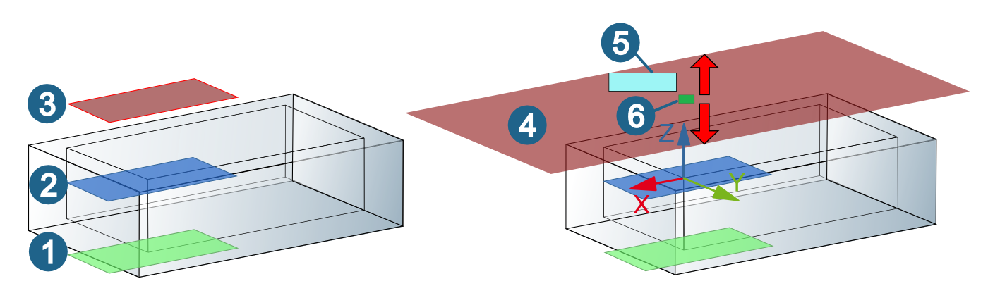

2.4. Selecting elements in the CAD system
Elements are selected interactively in the model. Tailored to the requirements of the respective cycle, the following elements can be selected:
Points (plunge points, drill points),
Contours and help contours (boundaries, leading curves, lines),
Surfaces (stop surfaces, surfaces for 3DF generation, and so on).
The functions for selecting elements are dependent on the CAD system used.
|
|
|
Select point, snap point, top. Edit the selection. |
||
|
|
Select contour. Edit the selection. |
||
|
|
|
Select closed contour, profile, boundary. Edit the selection. |
||
|
|
|
Select circle, profile, boundary. Edit the selection. |
||
|
|
Select face of a model, open/closed solid. Edit the selection. |
||
|
|
Select line, normal of a plane or curve. |
|||
|
|
Confirm the selection. |
|||


|  |
Specify the Z coordinates for depth (1), surface (2) and clearance plane (3) directly by double clicking the graphical preview. The graphical preview enlarges (4). Define the Z value directly in the input field (5) or use the drag point (6) to move the graphical preview upward or downward.
Select element group
Elements can be combined to form groups.
|
Group entities into a group within the model structure or separate them from a group. → |
If this function is activated, groups of elements can be selected. A group is divided into individual entities when it is transferred into hyperMILL. Subsequent changes to the entity within a group are not automatically forwarded to hyperMILL.
Define filter
Use a filter to define geometric elements.
-

Click the icon to open the Filter definition dialog, select the Active checkbox and enable the required filter option: Use color filter, Use tag filter or Use layer filter.
-


Then click the icons to Add / select color filter or Add / select tag filter and define the color or tag class. If required, click the
 icon to
select the surfaces that are to be used as the basis for the filter definition.
icon to
select the surfaces that are to be used as the basis for the filter definition. -
If a layer filter or a layer container filter is to be used, select the Layer filter or Layer container filter checkbox. Then click the icons to Add / select layer filter orAdd/Select layer container filter and define the layer/layer container.
-


To do this, in the Layer / Layer container line, click the icon to select a layer or a layer container that will be used for the filter definition. Enable the Use wildcard (\\*) option to search for character strings that appear before or after the placeholder in a name. You can also use two placeholders to search for strings in between.
-
To delete one or all filters, click the color, Layer or Tag class line and use the Delete / Delete all function on the shortcut menu.
-

After completing the filter definition, click the icon to include the elements found in the CAD model on the basis of the filter definition in the selection.
No filter function is available for hyperMILL for Autodesk® Inventor®. Only the color filter is available for hyperMILL for SOLIDWORKS.